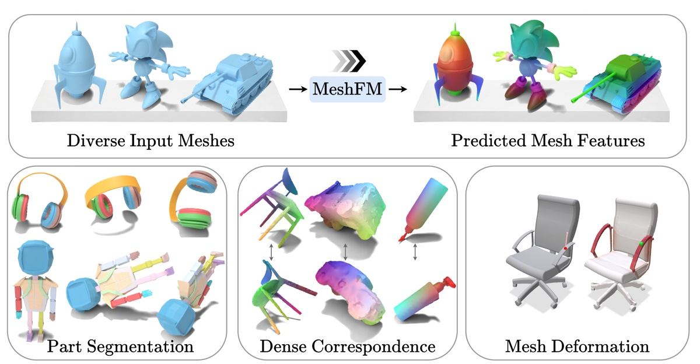
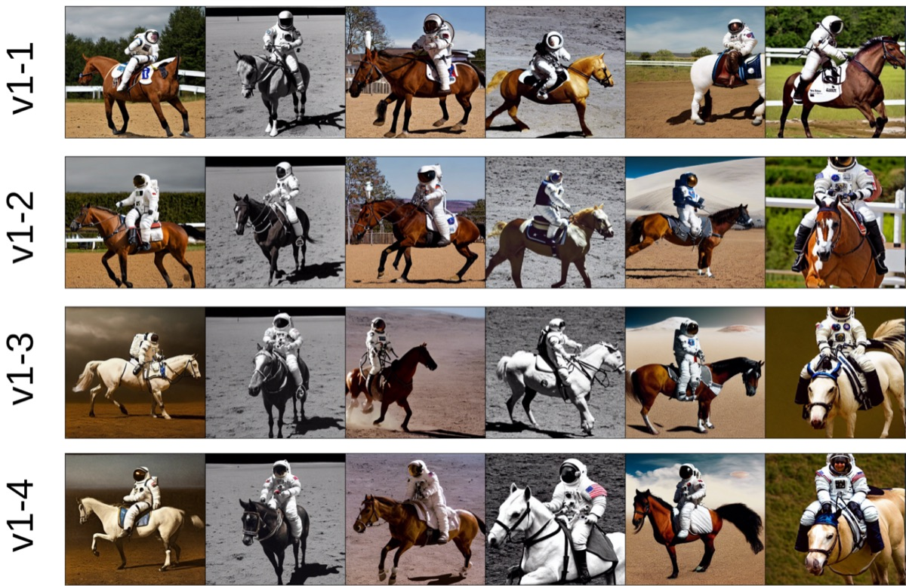
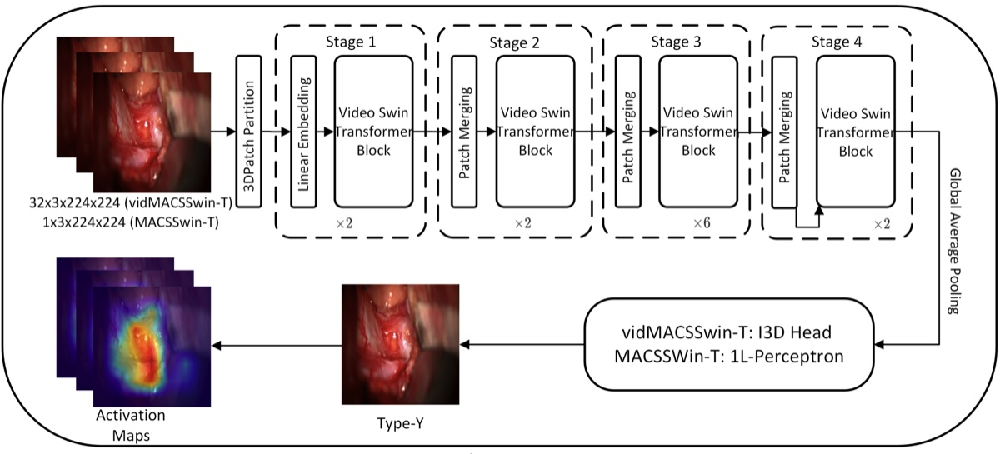
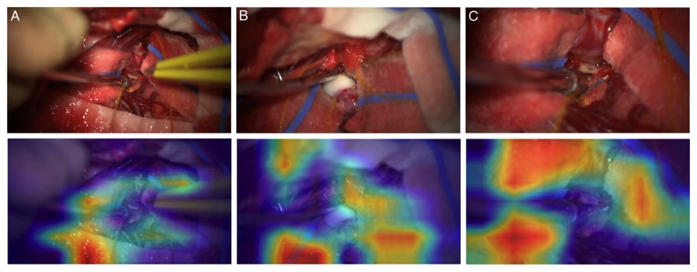
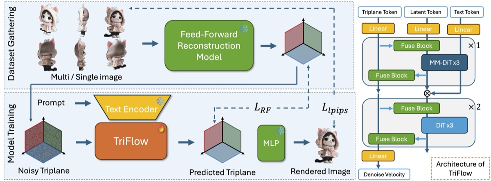

MeshFM: 2D Features Are All You Need for 3D Shape Understanding
European Conference on Computer Vision (ECCV) 2026
PhD student in Computer Science at University of Chicago.
Specialized in Computer Vision, Computer Graphics, Machine Learning.
I'm Jinfan Zhou, a PhD student at University of Chicago advised by Prof. Rana Hanocka. My research interests lie in the intersection of 3D computer vision, computer graphics and machine learning. I am particularly interested in 3D shape understanding and generative models. I study how to distill robust features from 2D for multiple downstream tasks, and study generative models for both images and 3D shapes generation.
I earned my Master's degree in Robotics from University of Michigan. I was fortunate to work with Prof. Jeong Joon Park and Prof. Qing Qu during my master's studies. I also earned my Bachelor's degree in Automation from Shandong University, advised by Prof. Wei Zhang. In addition, I worked under the supervision of Prof. Evangelos Mazomenos at University College London.

European Conference on Computer Vision (ECCV) 2026

International Conference on Machine Learning (ICML) 2024
Best Paper Award, NeurIPS 2023 Workshop on Diffusion Models


Annals of Surgery

arXiv preprint arXiv:2501.00651
* Equal contribution. See the full list on Google Scholar.
Research Engineer Intern